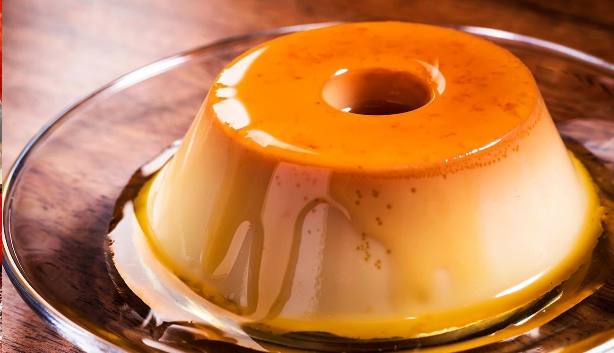

Mug Pudim

About the recipe
Really simple brazillian recipe, gotta love those. An all time classic I remember making myself as a kid.
It is important to be very careful in the process but enjoy yourself at the same time.
If you are looking to win a cooking championship this must be your go to in the sweet meta. You will be like Faker but in the kitchen.
Ingredients
- 2 Eggs
- Condensed milk
- Whole milk
- Sugar
- Water
Directions
- Put the sugar and the water on a mug
- Microwave it for 30 seconds
- In another recipient, toss the eggs and mix them real good
- Add the milk and the condensed milk
- Mix everything even more
- Toss it all on the microwave again
- Wait until it's cold (tip: use a refrigetor)
- Your recipe is ready!
back to homepage